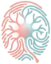

NASH THINK · MEMORY HOME
Ask your second brain
Ask a question about your conversations. Every answer shows the messages it comes from.
Connecting…
Loading map…
Private · stays on this device

NASH ThinkAsk a question about your conversations. Every answer shows the messages it comes from.
Type a question in the box and press Enter. Ask answers from your own messages and lists the conversations it used, folded under Sources; Find shows the closest memories. Click any source to open it on the memory map. Everything runs on this device.
Click a person (a filled dot) to see Your history with them: a short summary built only from counts, dates and conversation titles, with numbered links to the conversations it is based on. View conversations and Show full history load the messages in pages when you want them; Back returns to the profile.
Colour is the platform. Filled dots are people; rings are conversations. A line means that person wrote in that conversation. Filters in the left panel limit platforms and the time range; Ask, Insights and profiles follow them.
| Drag | Rotate the map |
| Right-drag · Shift + drag | Move the map |
| Scroll · pinch | Zoom |
| Click | Open a person or conversation; click empty space to close it |
| Double-click | Open and fly to it |
| G | Switch between Home and the memory map |
| I | Open / close Insights |
| / | Jump to the search box |
| ↑ ↓ Enter | Pick a search match |
| ← → ↑ ↓ | Move the map (Shift: rotate) |
| F | Fly to the selected person or conversation |
| Esc | Close this dialog or Insights, otherwise reset the view |
| ? | Show / hide this help |
With Evidence only, Ask uses no language model: every sentence is a quote, a count, a date or a title from your sources. With Best or Quick, a local Llama on this device writes the answer from those sources and cites them; when they don’t answer the question it says No relevant info found instead of guessing. Either way, read the sources before drawing conclusions.